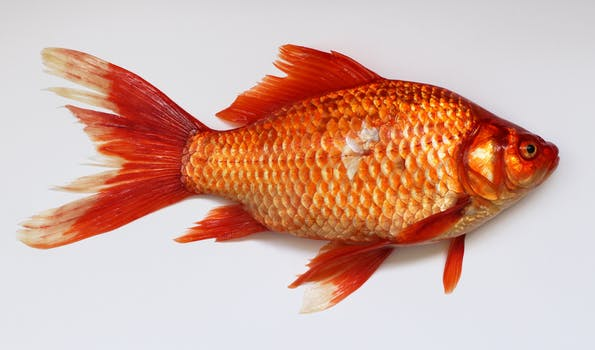

jsfdkajsdfhlakjdshjalksd

Keys to care for goldfish
- Get a large enough tank. The minimum tank size for one goldfish is 30-40 US gallons (113.5 liters) If they don't have enough
space a survival mechanism with start making it so they will stop growing
but there is a catch, their organs will continue to grow.
-
Set up the aquarium first before you buy the fish. It takes some time and cares to set up a proper goldfish habitat.
-
Use gravel that will not get stuck in your fish's throat. Goldfish are particularly prone to getting aquarium gravel caught
in their mouths. Use either large gravel (too big to swallow) or very small gravel.
- Make sure your tank has some scenery and light. Buy tank hoods with installed lights or any other aquarium specific light; normal old lightbulbs
or lamps may not have the right requirements.
Goldfish are diurnal which means they are active during the day.
-
Rig up a water filter. Goldfish need a filter. A water filter should have 3 stages: Mechanical, for removing large particles such
as fish waste or excess food;
chemical, for removing odors, discolorations, and other organics; and biological, to break down fish waste and ammonia with beneficial bacteria